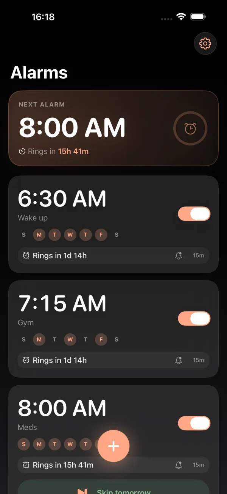
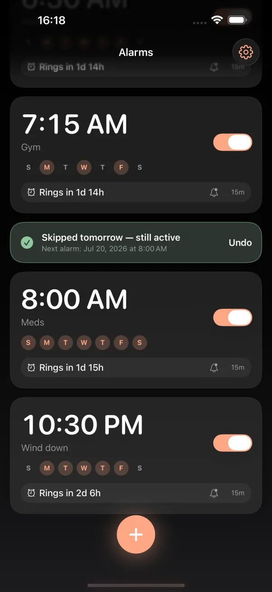

Smart alarm for iPhone
Skip today.
Never forget tomorrow.
The smart alarm Apple's Clock should have had. See exactly when it rings, get a heads-up before it does, and skip just today - tomorrow stays armed.
Free core app · No ads · No account · Everything on-device
Launching on the App Store - Summer 2026
Built on Apple's AlarmKit - rings through Silent and Focus·No ads, no account, no tracking·Free core, forever
The hero feature
Skip an alarm for just one day
Day off? Tap Skip today - from the alarm card, the heads-up notification, or the Lock Screen. Punctual skips only today's ring and shows you, in green, that the alarm is still active for tomorrow. One-tap Undo if you fat-finger it.
iOS can already skip one alarm - the wake-up alarm in your Sleep Schedule. Every other alarm you own has exactly one option: switch it off, and hope you remember to switch it back on. Punctual gives every alarm the treatment Apple reserved for one.
Three different things. Punctual keeps them straight.

Everything the built-in alarm is missing
One obsessive workflow: set it, see the countdown, get the heads-up, skip if you need to.
Live countdown
"Rings in 7h 42m" on every card, updating live. Know before you commit to one more episode.
Heads-up before it rings
A quiet notification ahead of the alarm - with a Skip today button right on it. Decide from your pillow.
Skip today
One tap skips just today. Tomorrow stays armed. Never wake up late because past-you turned the alarm off.
Vacation pausePro
Pause an alarm for a date range and it resumes automatically.
Recurring + exceptions
Weekday schedules, one-time dates, and per-day exceptions - handled cleanly and reliably.
Make it yoursPro
Themes, accent colors, app icons, heads-up sounds.
Punctual vs. the built-in Clock app
Honest comparison - Apple's Clock is fine. Punctual exists for the rows it's missing.
| Feature | Punctual | Apple Clock |
|---|---|---|
| Skip one day only - tomorrow stays armed | ✓ | Sleep Schedule alarm only |
| Live countdown to the next ring | ✓ | - |
| Heads-up notification before the alarm | ✓ | - |
| Vacation pause with auto-resume | ✓ | - |
| Rings through Silent mode & Focus | ✓ | ✓ |
| Price | Free · Pro optional | Free |
Free forever. Pro when you want more.
The full alarm - countdown, heads-up, Skip today - is free, with no ads. Pro is optional, and if you hate subscriptions, Lifetime is one payment. No rent on an alarm clock.
Monthly
Yearly
Lifetime
Every tier unlocks the same Pro set:
Vacation pause · Multiple & custom heads-ups · Snooze past 15 min · Alarm groups · Calendar auto-skip · Themes & accent colors · App icons & heads-up sounds
Prices shown in USD; final pricing set by the App Store at launch.
Frequently asked
How do I skip an alarm for just one day on iPhone?
With Punctual, tap Skip today on the alarm card, on the heads-up notification, or on the Lock Screen. Only that day's ring is skipped - the alarm stays armed for tomorrow, and you get an Undo. Apple's built-in Clock has a Skip for Tonight, but only for the wake-up alarm in your Sleep Schedule; any other alarm can only be turned fully off.
Can an alarm app ring through Silent mode and Focus on iPhone?
Yes. Apps built on Apple's AlarmKit framework in iOS 26 can ring through Silent mode and Focus, exactly like the built-in Clock. Punctual is built on AlarmKit, so your alarm sounds even when the phone is silenced.
Can I pause my alarms while on vacation?
Yes - Vacation pause is a Punctual Pro feature. Pick a date range and the alarm goes quiet for those days, then resumes automatically. No turning alarms off and forgetting to turn them back on.
Is Punctual free?
Yes. The full core experience - live countdown, heads-up notification, and Skip today - is free forever, with no ads and no account. Punctual Pro is an optional upgrade for power features, available monthly, yearly, or as a one-time lifetime purchase.
Does Punctual collect my data?
No. Punctual has no accounts, no analytics, and no tracking. Alarms and settings stay on your device. See the privacy policy for details.
What's the difference between Skip, Pause, and Off?
Skip silences exactly one occurrence - tomorrow stays armed. Pause silences a date range and resumes automatically. Off disarms the alarm until you turn it back on. Punctual shows each state clearly on the alarm card, so you always know what will and won't ring.
Does Punctual work on my iPhone?
Punctual requires iOS 26 or later, because it is built on Apple's AlarmKit - the framework that lets third-party alarms ring through Silent mode and Focus. It is designed for iPhone. Having trouble? See Support.
Can I change the alarm sound?
With Punctual Pro you can import your own audio and use it for both the heads-up notification and the alarm itself. Either way, the alarm breaks through Silent mode and Focus.
When can I get it?
Punctual is in final testing and launches on the App Store this summer. Tap Get notified and we'll email you once - nothing else, ever.
Wake up on your terms.
Free at launch. Your alarms will thank you - quietly, and only when asked.